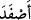
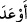

menfaat anlamı varken, dört harfli olanında şer ve zarar anlamı söz konusudur. Yalnız (__WORD__)’nin “ihsân etti” anlamında oluşunda bir incelik olup o da fiildeki hemzenin
olumsuzluk (selb) bildiren bir hemze olmasıdır. O zaman anlam şöyle olmaktadır:
Kendisine ihtiyacını giderecek bir ihsanda bulunmak sûretiyle var olan ihtiyacını
giderdim (izâle ettim). (__WORD__)’de de ise böyle bir durum yoktur; çünkü bu, hemzesi
tehdîd anlamı versin diye vaz edilmiş bulunan aslî bir kullanıştır.
Âyetin anlamı şudur: Biz Süleyman’a birtakım şeytanları daha boyun eğdirdik ki
bunlar ne dalgıç ne de bina ustası idi.
Öyle görünüyor ki Süleyman (a.s.) bunları inşaat, dalgıçlık vb. meşakkatli işlerde
istihdam ettiği “amele” grubu ile kötülük ve bozgunculuktan alıkoymak amacıyla zincire
vurup demirlerle de iyice sıkmış olduğu “merade” grubu olmak üzere iki gruba ayırmış
bulunuyordu.
Şayet şöyle bir soru sorulacak olursa, “Bu âyet, şeytanlarda insanoğlunun
yapamayacağı kocaman binaları yapabilecek; denizlere dalıp oradaki mücevheratı
çıkarabilecek müthiş bir güç bulunduğuna delâlet etmektedir. Bunların böyle zincirlere
vurulup demirlerle birbirlerine bağlanması nasıl mümkün olabilir?! Burada çözümü zor
bir mesele sözkonusudur ve o da şudur: Bunların gövdeleri (ecsâd) ya kesîftir ya da
lâtîftir. Kesîf ise sağlam bir görme duyusuna sâhip olanların bunları görmeleri gerekir.
Çünkü gövdeleri kesîf olmasına rağmen görülmeyebiliyorlarsa ve böyle bir şey
mümkün ise bu, şu anda bizim yakınımızda da göremediğimiz yalçın dağlar,
duyamadığımız korkunç sesler olabileceği anlamına gelir ki bu bir safsatadan başka bir
şey değildir. Gövdeleri latîf ise lâtiflik kavramı salâbet, sertlik ve şiddet kavramıyla
bağdaşmayacağı için bu latîf varlıkların insanoğlunun üstesinden gelemeyeceği birtakım
şeylerin üstesinden gelebilecek müthiş bir güce sâhip olmaları da mümkün olmayacak
demektir. Çünkü latîf cisimlerin kıvamı zayıf olur; en küçük bir baskı altında parçaları
dağılacağından ağır varlıkları kaldırmaya güçleri yetmez ve meşakkatli işleri
başaramazlar. Ayrıca böylesi varlıkların zincir ve bukağılarla bağlanması da mümkün
değildir.
İşte, böyle bir soruya şu şekilde cevap veririz: Bunların gövdeleri latîf olmakla
beraber aynı zamanda şeffaftır da. Gövdelerinin latîf oluşu, “parçalanmanın
imkânsızlığı” anlamındaki bir salâbet ve sertlikle bağdaşmaz değildir. O halde latîf
olmaları hasebiyle görülememeleri, sertlik sâhibi olmaları bakımından da zincire
vurulmaları, ağır şeyleri taşımaları ve meşakkatli işlerin üstesinden gelmeleri de
mümkün olacaktır. Evet, latîflik kavramı sertlik kavramıyla bağdaşmaz, diyelim. Fakat
salâbet sâhibi olmayan latîf bir varlığın ağır şeyleri kaldırmasının ve zor işlerin
üstesinden gelmesinin imkânsız olduğunu kabul etmeyiz. Çünkü herkesin bildiği gibi
kasırgalar bir grup insanın bile yapamayacağı hayret verici işler yapabilmektedir.
Bahru’l’ulûm’da şöyle der: “En muhtemel anlam şudur: Âyetin maksadı, bunların
kötülüklerden alıkonulduğunu zincire vurulma fiili ile temsili olarak ifâde etmekten
ibârettir. Demek istiyoruz ki itirazcıların, “bunların zincire vurulması mümkün değildir”